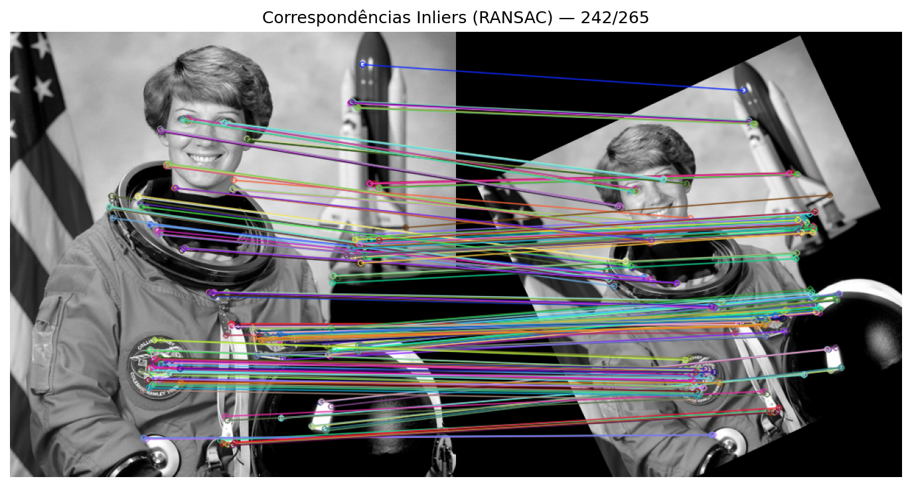
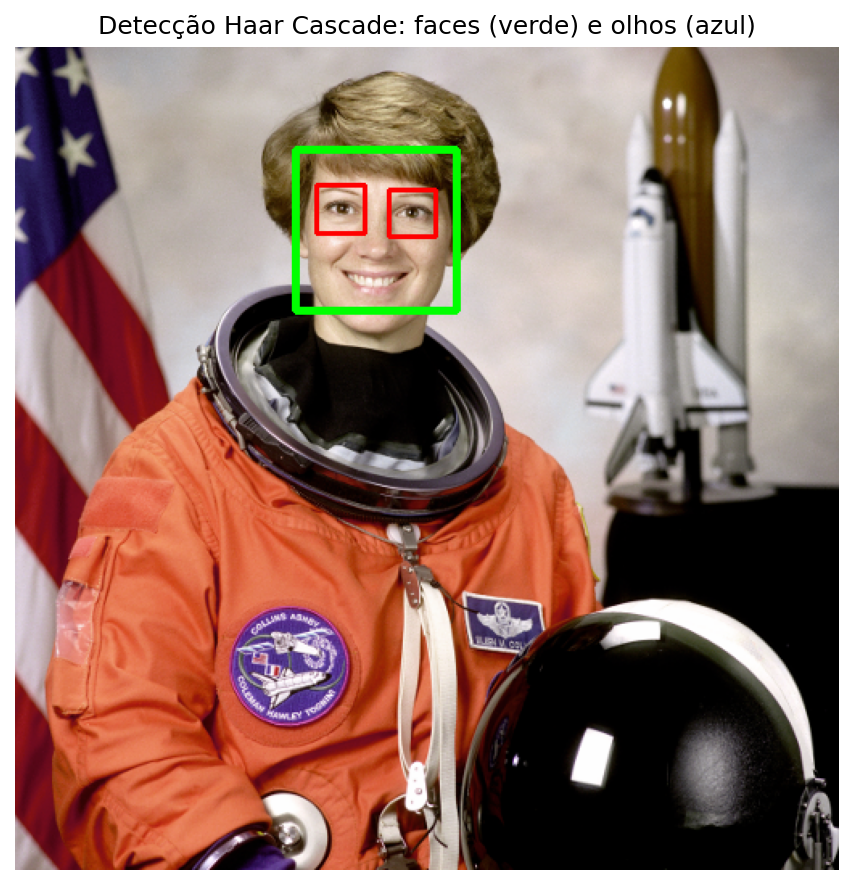
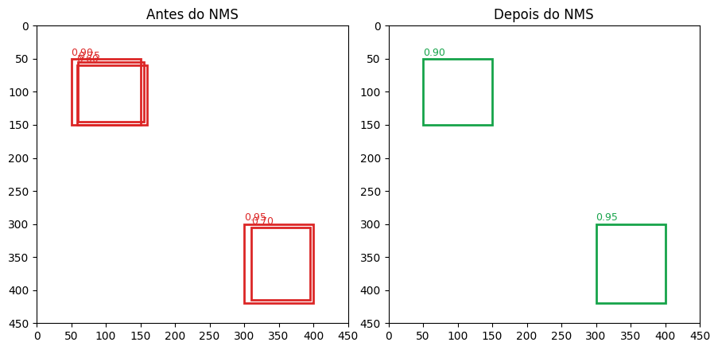
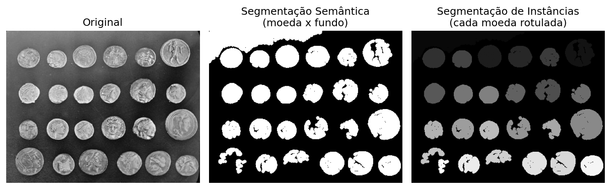

8Compreendendo Cenas: Correspondência de Características, Detecção e Segmentação
🚧 Em construção!
No Capítulo 7, cada imagem — ou cada recorte de textura — era tratada como uma unidade isolada, já devidamente enquadrada, a ser rotulada com uma única classe: “este dígito é um 7”, “esta textura é granular”. Essa é uma simplificação poderosa para introduzir os fundamentos do reconhecimento de padrões, mas está longe de como a visão computacional é exigida na prática.
Uma cena real raramente chega pronta e enquadrada. Ela é bagunçada: contém múltiplos objetos, em posições, escalas e orientações desconhecidas, muitas vezes parcialmente sobrepostos, e a tarefa não é apenas “que classe é essa imagem?”, mas perguntas bem mais ricas — “este objeto que vejo aqui é o mesmo que vi naquela outra foto, só que girado e mais longe?”, “onde exatamente, nesta imagem, está cada rosto?”, “quais pixels pertencem a cada objeto individual da cena?”.
Este capítulo caminha por essas três perguntas, na ordem em que historicamente foram resolvidas por técnicas clássicas de visão computacional:
Correspondência de características — como reconhecer o mesmo padrão local em duas imagens diferentes, mesmo sob rotação, escala e mudança de ponto de vista, usando detectores e descritores locais (como o ORB) combinados a modelos geométricos robustos (homografia via RANSAC);
Detecção de objetos — como localizar, e não apenas classificar, um padrão de interesse dentro de uma imagem maior, partindo do clássico algoritmo de Haar Cascade (Viola-Jones) até os conceitos gerais de bounding box, Intersection over Union (IoU) e supressão de não-máximos (NMS), comuns a praticamente todo detector moderno;
Segmentação visual — como ir além da caixa delimitadora e atribuir uma classe a cada pixel da imagem, distinguindo os três principais paradigmas: segmentação semântica, de instâncias e panóptica.
Ao final, o capítulo apresenta uma visão geral dos principais modelos modernos que resolvem essas tarefas com redes neurais profundas — sem, no entanto, aprofundar seu treinamento, o que será feito no Capítulo 9, capítulo final desta parte.
8.1 Objetivos do Capítulo
Ao final deste capítulo, o estudante deverá ser capaz de:
Compreender o papel de detectores e descritores locais de características na correspondência entre imagens;
Implementar um pipeline de correspondência de pontos com ORB e estimar uma homografia robusta com RANSAC;
Compreender a intuição e as limitações do algoritmo de Haar Cascade para detecção de objetos (faces e olhos);
Definir e calcular Intersection over Union (IoU) e aplicar supressão de não-máximos (NMS) para refinar detecções redundantes;
Diferenciar conceitualmente segmentação semântica, de instâncias e panóptica, e implementar uma versão clássica (não baseada em aprendizado profundo) de segmentação semântica e de instâncias;
Reconhecer, em linhas gerais, os principais modelos modernos de detecção e segmentação (YOLO, Faster R-CNN, SSD, U-Net, Mask R-CNN e Segment Anything) e o papel do aprendizado profundo em cada um deles.
8.3 Detectores e Descritores Locais de Características
Retomando a distinção já estabelecida no Capítulo 6: um detector localiza pontos de interesse (keypoints) em uma imagem — regiões com alto contraste local, cantos, ou padrões distintivos, que tendem a ser reencontrados de forma estável mesmo sob pequenas transformações. Um descritor, por sua vez, resume a vizinhança de cada ponto detectado em um vetor numérico, de forma análoga aos descritores de textura e forma do Capítulo 7 — a diferença crucial é que aqui o descritor é calculado em torno de um ponto específico, e não sobre a imagem inteira.
Com um conjunto de pares (ponto, descritor) extraído de duas imagens, o problema de correspondência (matching) consiste em, para cada ponto da primeira imagem, encontrar o ponto da segunda cujo descritor é mais similar — permitindo responder à pergunta “este padrão local também aparece na outra imagem, e onde?”.
8.3.1 O Descritor ORB
Este capítulo utiliza o ORB (Oriented FAST and Rotated BRIEF), um descritor binário, rápido e de uso livre (sem restrições de patente), amplamente utilizado em aplicações de tempo real. O ORB combina:
o detector FAST (Features from Accelerated Segment Test), que localiza cantos comparando a intensidade de um pixel central a um círculo de pixels vizinhos;
o descritor BRIEF (Binary Robust Independent Elementary Features), que codifica a vizinhança de cada ponto como uma sequência de bits, resultante de comparações de intensidade entre pares de pixels amostrados;
uma componente de orientação, que torna o descritor robusto a rotações da imagem.
Por ser um descritor binário, a comparação entre dois descritores ORB é feita pela distância de Hamming (número de bits diferentes) em vez da distância euclidiana utilizada no k-NN do Capítulo 7 — uma operação muito mais rápida de calcular.
8.4 Projeto Prático 1: Correspondência de Características e Homografia com ORB
Para demonstrar a correspondência de características sem depender de imagens externas, uma “cena” sintética é criada a partir da imagem astronaut da base scikit-image, aplicando uma rotação, uma escala e uma translação conhecidas — simulando a mesma cena fotografada de um ângulo e distância diferentes.
Figura 8.1: Imagem original e cena sintética gerada por rotação, escala e translação — simulando a mesma cena vista de outro ângulo.
Em seguida, o detector/descritor ORB é aplicado a ambas as imagens, e os descritores são comparados por força bruta (BFMatcher) com distância de Hamming, mantendo apenas correspondências mútuas (crossCheck=True).
Pontos de interesse detectados: 500 (original), 500 (cena)
Correspondências encontradas: 265
Figura 8.2: As 30 melhores correspondências de características ORB entre a imagem original e a cena sintética, antes da filtragem por RANSAC.
8.4.1 Estimando a Homografia com RANSAC
Mesmo com a distância de Hamming, algumas correspondências estarão incorretas (falsos positivos de matching). A homografia — a mesma transformação de perspectiva utilizada no Capítulo 6 para retificar documentos — pode ser estimada de forma robusta a essas correspondências espúrias por meio do algoritmo RANSAC (Random Sample Consensus), detalhado na próxima seção.
pts1 = np.float32([kp1[m.queryIdx].pt for m in matches])pts2 = np.float32([kp2[m.trainIdx].pt for m in matches])H, mascara_inliers = cv2.findHomography(pts1, pts2, cv2.RANSAC, ransacReprojThreshold=5.0)n_inliers =int(mascara_inliers.sum())print(f"Matriz de homografia estimada:\n{H}\n")print(f"Inliers: {n_inliers} de {len(matches)} correspondências ({100*n_inliers/len(matches):.1f}%)")img_inliers = cv2.drawMatches( img_original, kp1, img_cena, kp2, matches, None, matchesMask=mascara_inliers.ravel().tolist(), flags=cv2.DrawMatchesFlags_NOT_DRAW_SINGLE_POINTS)mm.show([img_inliers], titles=[f"Correspondências Inliers (RANSAC) — {n_inliers}/{len(matches)}"], cols=1, figsize=(10, 5))
Matriz de homografia estimada:
[[ 7.19469553e-01 3.33653609e-01 2.52714667e+01]
[-3.39480958e-01 7.18732182e-01 1.77321736e+02]
[-8.03801660e-06 -9.91670505e-06 1.00000000e+00]]
Inliers: 242 de 265 correspondências (91.3%)

Figura 8.3: Correspondências classificadas como inliers (verde) pelo RANSAC ao estimar a homografia entre as duas imagens.
8.5 Modelagem Matemática: Homografia e RANSAC
8.5.1 Homografia
Uma homografia \(H\) é uma matriz \(3\times3\) que mapeia pontos de um plano projetivo a outro:
\[
\begin{bmatrix} x' \\ y' \\ w' \end{bmatrix} =
\begin{bmatrix} h_{11} & h_{12} & h_{13} \\ h_{21} & h_{22} & h_{23} \\ h_{31} & h_{32} & h_{33} \end{bmatrix}
\begin{bmatrix} x \\ y \\ 1 \end{bmatrix},
\qquad
\left(\frac{x'}{w'}, \frac{y'}{w'}\right) \text{ é o ponto correspondente.}
\]
Como \(H\) possui 8 graus de liberdade (a matriz é definida a menos de escala), são necessários, no mínimo, 4 pares de pontos correspondentes para estimá-la — porém, na prática, o conjunto de correspondências obtido pelo ORB contém múltiplos pares incorretos.
8.5.2 RANSAC
O RANSAC estima um modelo robusto a essas correspondências espúrias (outliers) por meio de um processo iterativo:
Sorteia-se aleatoriamente um subconjunto mínimo de correspondências (4 pares, no caso da homografia);
Estima-se o modelo (a homografia) a partir desse subconjunto;
Conta-se quantas correspondências do conjunto total são consistentes com esse modelo — os inliers — dentro de uma margem de erro (ransacReprojThreshold);
Repete-se o processo por um número de iterações, mantendo o modelo com o maior número de inliers;
Ao final, o modelo é refinado utilizando apenas os inliers do melhor conjunto encontrado.
Esse procedimento é bastante geral e não se restringe à homografia — o mesmo princípio pode ajustar retas, círculos ou qualquer modelo paramétrico na presença de dados ruidosos, como demonstrado no simulador a seguir.
O simulador a seguir ilustra o funcionamento do RANSAC em um cenário simplificado — o ajuste de uma reta a um conjunto de pontos com aproximadamente 25% de outliers. Ajuste o limiar de distância e clique em “Rodar RANSAC” para observar como o algoritmo separa inliers de outliers e ajusta o modelo apenas com base nos primeiros.
🎯 Simulador: RANSAC — Ajuste de Reta Robusto a OutliersDados com ~25% de correspondências espúrias
Limiar (px)
15
Inliers
–
Outliers
–
Iterações
–
Pontos (ainda não classificados)
Inliers
Outliers
Figura 8.4: Simulador interativo do algoritmo RANSAC: ajuste o limiar de distância e execute o algoritmo para observar a separação entre inliers e outliers.
Nota🧠 Por que funciona? — Robustez por consenso
O RANSAC não tenta usar todos os dados de uma vez — ao contrário da regressão por mínimos quadrados tradicional, que é fortemente distorcida por outliers, o RANSAC ajusta modelos a partir de pequenas amostras aleatórias e confia no consenso: o modelo correto tende a ser consistente com uma grande fração dos dados (os inliers), enquanto um modelo ajustado a uma amostra “azarada” (contendo outliers) raramente será consistente com muitos outros pontos.
Parâmetros críticos: o limiar de distância define o quão “rigorosa” é a definição de inlier — um limiar muito pequeno pode descartar inliers legítimos (dados com ruído natural); um limiar muito grande pode aceitar outliers como se fossem inliers, contaminando o modelo final. O número de iterações deve ser grande o suficiente para que, estatisticamente, pelo menos uma amostra aleatória livre de outliers seja sorteada.
Limitações: o RANSAC assume que existe um único modelo dominante nos dados; funciona mal se os inliers representam menos da metade do conjunto, ou se há múltiplas estruturas igualmente relevantes (por exemplo, dois planos distintos em uma cena 3D).
8.6 Detecção de Objetos: Haar Cascade (Viola-Jones)
A correspondência de características responde “onde está o mesmo padrão que já conheço?”. A detecção de objetos propõe um problema diferente: “onde está um padrão de uma categoria genérica (por exemplo,”rosto humano”), mesmo que eu nunca tenha visto esta pessoa específica antes?“.
O algoritmo de Haar Cascade, proposto por Viola e Jones em 2001, foi o primeiro método capaz de realizar detecção de faces em tempo real, e permanece disponível no OpenCV para fins didáticos e aplicações leves. Seu funcionamento combina três ideias:
Características do tipo Haar: filtros retangulares simples (por exemplo, a diferença de intensidade entre uma região clara e uma região escura adjacente) que capturam padrões grosseiros, mas informativos, como “a região dos olhos costuma ser mais escura que a da testa”;
Imagem integral: uma estrutura de dados que permite calcular a soma de intensidades de qualquer região retangular em tempo constante, tornando viável avaliar milhares de características Haar em diferentes posições e escalas rapidamente: \[
I_{\text{integral}}(x, y) = \sum_{x' \leq x,\, y' \leq y} I(x', y');
\]
Cascata de classificadores fracos (AdaBoost): em vez de um único classificador complexo, uma sequência de classificadores simples é aplicada em cascata — janelas que claramente não contêm o objeto são descartadas nos primeiros estágios (baratos), e apenas as candidatas promissoras avançam para estágios mais rigorosos, tornando a busca por toda a imagem, em múltiplas escalas (sliding window multi-escala), computacionalmente viável.
# Carregar imagemimg_rgb = skdata.astronaut()img_gray = cv2.cvtColor(img_rgb, cv2.COLOR_RGB2GRAY)# Pré-processamentoimg_gray_equalizado = cv2.equalizeHist(img_gray)img_gray_suave = cv2.GaussianBlur(img_gray_equalizado, (3, 3), 0)# Carregar classificadoresface_cascade = cv2.CascadeClassifier(cv2.data.haarcascades +"haarcascade_frontalface_default.xml")face_cascade_alt = cv2.CascadeClassifier(cv2.data.haarcascades +"haarcascade_frontalface_alt.xml")eye_cascade = cv2.CascadeClassifier(cv2.data.haarcascades +"haarcascade_eye.xml")# Detecção com parâmetros otimizadosfaces = face_cascade.detectMultiScale( img_gray_suave, scaleFactor=1.03, minNeighbors=8, minSize=(70, 70), maxSize=(300, 300))# Validação com segundo classificadorfaces2 = face_cascade_alt.detectMultiScale( img_gray_suave, scaleFactor=1.03, minNeighbors=6, minSize=(70, 70), maxSize=(300, 300))# Combinar detecções (simplificado)faces_validas = []for (x, y, w, h) in faces:# Filtrar por proporçãoif0.7<= w/h <=1.1:# Verificar olhos regiao_face = img_gray[y:y+h, x:x+w] olhos = eye_cascade.detectMultiScale( regiao_face, scaleFactor=1.03, minNeighbors=5, minSize=(15, 15) )iflen(olhos) >=1:# Verificar se está nas detecções do segundo classificadorfor (x2, y2, w2, h2) in faces2:ifabs(x - x2) < w/2andabs(y - y2) < h/2: faces_validas.append((x, y, w, h))break# Visualizaçãoimg_anotada = img_rgb.copy()for (x, y, w, h) in faces_validas: cv2.rectangle(img_anotada, (x, y), (x+w, y+h), (0, 255, 0), 3) regiao_face = img_gray[y:y+h, x:x+w] olhos = eye_cascade.detectMultiScale(regiao_face, scaleFactor=1.03, minNeighbors=5)for (ex, ey, ew, eh) in olhos: cv2.rectangle(img_anotada, (x+ex, y+ey), (x+ex+ew, y+ey+eh), (255, 0, 0), 2)mm.show([img_anotada], titles=["Detecção Haar Cascade: faces (verde) e olhos (azul)"], cols=1, figsize=(6, 6))

Figura 8.5: Detecção de faces e olhos com Haar Cascade na imagem astronaut (scikit-image).
Nota🧠 Por que funciona? — E por que também falha
Ao executar a célula acima, o classificador de fato localiza corretamente o rosto na imagem — e, dentro dele, os dois olhos. Mas repare: uma segunda região também foi marcada como “face”, sobre um trecho do traje espacial. Trata-se de um falso positivo genuíno: o padrão de contraste local daquela região do tecido, por coincidência, é suficiente para satisfazer os filtros Haar em todos os estágios da cascata.
Esse resultado, embora indesejado, ilustra exatamente a principal limitação do Haar Cascade: por depender de características extremamente genéricas (diferenças de intensidade entre blocos retangulares), o algoritmo é sensível a texturas e padrões que “parecem” o suficiente com um rosto do ponto de vista desses filtros, mesmo sem qualquer semântica real. Além disso, o Haar Cascade tende a funcionar bem apenas para faces frontais, sendo degradado por variações de pose, oclusão parcial ou iluminação muito diferente daquela presente nas imagens de treinamento originais.
Quando utilizar: Haar Cascade continua sendo uma escolha razoável quando há restrição severa de poder computacional (ex.: dispositivos embarcados) e a aplicação tolera uma taxa moderada de falsos positivos. Para aplicações mais exigentes, os detectores modernos baseados em redes neurais profundas — apresentados adiante — reduzem drasticamente esse tipo de erro.
8.7 Detecção de Objetos: Caixas Delimitadoras, IoU e NMS
Praticamente todo detector de objetos — do Haar Cascade aos modelos modernos baseados em redes neurais profundas — expressa suas detecções como caixas delimitadoras (bounding boxes), tipicamente representadas por quatro números: \((x_{min}, y_{min}, x_{max}, y_{max})\).
8.7.1 Intersection over Union (IoU)
Para avaliar o quão bem uma caixa detectada coincide com a localização real de um objeto — ou o quanto duas detecções se sobrepõem — utiliza-se a métrica IoU:
Um IoU de 1 indica sobreposição perfeita; um IoU de 0 indica caixas completamente disjuntas. Na prática, é comum considerar uma detecção “correta” quando seu IoU com a localização real (ground truth) excede um limiar, tipicamente 0,5.
8.7.2 Supressão de Não-Máximos (NMS)
Detectores do tipo sliding window (como o Haar Cascade) tipicamente produzem múltiplas detecções sobrepostas para o mesmo objeto — em posições e escalas ligeiramente diferentes, todas com alta confiança. A supressão de não-máximos elimina essa redundância:
Ordena-se as detecções por confiança (pontuação), da maior para a menor;
Seleciona-se a detecção de maior confiança e descarta-se todas as demais cujo IoU com ela exceda um limiar;
Repete-se o processo com as detecções restantes, até que nenhuma sobre.
def calcular_iou(caixa_a, caixa_b): xA =max(caixa_a[0], caixa_b[0]); yA =max(caixa_a[1], caixa_b[1]) xB =min(caixa_a[2], caixa_b[2]); yB =min(caixa_a[3], caixa_b[3]) intersecao =max(0, xB - xA) *max(0, yB - yA) area_a = (caixa_a[2] - caixa_a[0]) * (caixa_a[3] - caixa_a[1]) area_b = (caixa_b[2] - caixa_b[0]) * (caixa_b[3] - caixa_b[1])return intersecao /float(area_a + area_b - intersecao +1e-9)def supressao_nao_maximos(caixas, pontuacoes, limiar_iou=0.4): ordem = np.argsort(pontuacoes)[::-1] mantidas = [] ordem =list(ordem)whilelen(ordem) >0: atual = ordem.pop(0) mantidas.append(atual) ordem = [i for i in ordem if calcular_iou(caixas[atual], caixas[i]) < limiar_iou]return mantidascaixas = np.array([ [50, 50, 150, 150], [60, 55, 155, 145], [58, 60, 160, 150], [300, 300, 400, 420], [310, 305, 395, 415],])pontuacoes = np.array([0.90, 0.75, 0.60, 0.95, 0.70])mantidas = supressao_nao_maximos(caixas, pontuacoes, limiar_iou=0.4)print(f"Caixas antes do NMS: {len(caixas)} | Caixas após o NMS: {len(mantidas)}")print(f"IoU entre a 1ª e a 2ª caixa: {calcular_iou(caixas[0], caixas[1]):.3f}")fig, ax = plt.subplots(1, 2, figsize=(9, 4.5))for i, c inenumerate(caixas): ax[0].add_patch(patches.Rectangle((c[0], c[1]), c[2]-c[0], c[3]-c[1], fill=False, edgecolor="#dc2626", linewidth=2)) ax[0].text(c[0], c[1]-5, f"{pontuacoes[i]:.2f}", color="#dc2626", fontsize=9)ax[0].set_xlim(0, 450); ax[0].set_ylim(450, 0); ax[0].set_title("Antes do NMS")for i in mantidas: c = caixas[i] ax[1].add_patch(patches.Rectangle((c[0], c[1]), c[2]-c[0], c[3]-c[1], fill=False, edgecolor="#16a34a", linewidth=2)) ax[1].text(c[0], c[1]-5, f"{pontuacoes[i]:.2f}", color="#16a34a", fontsize=9)ax[1].set_xlim(0, 450); ax[1].set_ylim(450, 0); ax[1].set_title("Depois do NMS")plt.tight_layout()
Caixas antes do NMS: 5 | Caixas após o NMS: 2
IoU entre a 1ª e a 2ª caixa: 0.775

Figura 8.6: Efeito da Supressão de Não-Máximos (NMS): múltiplas detecções redundantes (esquerda) são reduzidas a uma detecção por objeto (direita).
Nota🧠 Por que funciona? — NMS como “faxina” pós-detecção
O NMS não melhora a qualidade individual de cada detecção — ele apenas remove redundância. Sua eficácia depende diretamente do limiar de IoU escolhido: um limiar muito baixo pode eliminar detecções de objetos genuinamente próximos entre si (dois rostos lado a lado, por exemplo); um limiar muito alto pode deixar passar múltiplas caixas para o mesmo objeto. Esse é exatamente o tipo de ajuste fino que, no Haar Cascade, ajudaria a reduzir — mas não eliminaria — o falso positivo observado na seção anterior, caso ele fosse detectado repetidamente em escalas próximas.
8.8 Segmentação Visual: Semântica, de Instâncias e Panóptica
Uma caixa delimitadora localiza um objeto de forma aproximada — mas não diz exatamente quais pixels pertencem a ele. A segmentação visual resolve essa limitação, atribuindo um rótulo a cada pixel da imagem. Três paradigmas são amplamente utilizados, e a distinção entre eles é uma fonte comum de confusão:
Paradigma
Pergunta que responde
Distingue objetos individuais da mesma classe?
Semântica
“A que classe pertence cada pixel?”
Não — todos os pixels de “pessoa” recebem o mesmo rótulo, mesmo que sejam pessoas diferentes
De instâncias
“Quais pixels pertencem a cada objeto individual?”
Sim — mas tipicamente apenas para classes “contáveis” (objetos), ignorando o fundo
Panóptica
Combinação das duas anteriores
Sim — cada pixel recebe uma classe semântica e, quando aplicável, um identificador de instância
A segmentação semântica trata a imagem inteira, incluindo regiões de fundo não contáveis (céu, grama, estrada); a segmentação de instâncias foca em objetos discretos e contáveis, distinguindo cada ocorrência; a segmentação panóptica, formalizada em 2019, unifica os dois paradigmas em uma única representação.
Antes do amplo uso de redes neurais profundas — que serão apresentadas no Capítulo 9 — versões simplificadas de segmentação semântica e de instâncias já eram possíveis com técnicas clássicas, como demonstrado a seguir.
img_moedas = skdata.coins()limiar = threshold_otsu(img_moedas)mascara_bin = img_moedas > limiar# Limpeza morfológica: remove ruído e pequenos artefatos da limiarizaçãomascara_limpa = opening(mascara_bin, disk(3))mascara_limpa = remove_small_objects(mascara_limpa, max_size=200)# Segmentação semântica: apenas "moeda" x "fundo"mascara_semantica = (mascara_limpa.astype(np.uint8)) *255# Segmentação de instâncias: cada componente conectado recebe um rótulo distintorotulos_instancias = label(mascara_limpa)print(f"Instâncias (moedas individuais) identificadas: {rotulos_instancias.max()}")mm.show( [img_moedas, mascara_semantica, rotulos_instancias], titles=["Original", "Segmentação Semântica\n(moeda x fundo)", "Segmentação de Instâncias\n(cada moeda rotulada)"], cols=3, figsize=(10, 3.5))
Instâncias (moedas individuais) identificadas: 26

Figura 8.7: Segmentação clássica (não baseada em aprendizado profundo): máscara semântica (moeda x fundo) via limiarização de Otsu, e segmentação de instâncias via rotulagem de componentes conectados.
Nota🧠 Por que funciona? — E onde a abordagem clássica esbarra
A limiarização de Otsu (Capítulo 4) mais limpeza morfológica funciona bem aqui porque as moedas têm contraste consistente com o fundo e não se tocam de forma significativa — condições favoráveis. A rotulagem de componentes conectados então separa “instâncias” apenas por estarem espacialmente desconectadas na máscara binária.
Essa abordagem, no entanto, não escala: ela falha imediatamente diante de objetos da mesma classe que se sobrepõem parcialmente (a rotulagem de componentes os fundiria em uma única instância), de classes com aparência muito variável (não há um único limiar de intensidade capaz de separar “gato” de “não-gato” em fotos naturais), ou de cenas com múltiplas classes semanticamente distintas simultaneamente. É exatamente essa lacuna que os modelos de segmentação baseados em redes neurais profundas — capazes de aprender a nção de “objeto” e “classe” diretamente dos dados, em vez de depender de contraste de intensidade — vêm preencher, como será estudado no Capítulo 9.
A segmentação panóptica completa o quadro: ela aplicaria a segmentação semântica ao fundo (regiões não contáveis, se houvesse alguma nesta imagem) e a segmentação de instâncias às moedas, combinando ambos os resultados em um único mapa consistente.
8.9 Visão Geral de Modelos Modernos
As técnicas clássicas apresentadas neste capítulo — Haar Cascade, IoU/NMS e segmentação por limiarização — foram, em grande parte, substituídas ou complementadas por modelos baseados em redes neurais profundas, capazes de aprender diretamente dos dados quais características são relevantes para cada tarefa. A tabela a seguir situa os principais modelos, sem aprofundar seu treinamento — o que será feito no Capítulo 9.
Modelo
Tarefa
Ideia Central
YOLO (You Only Look Once)
Detecção de objetos
Trata a detecção como um único problema de regressão: uma rede prevê, em uma única passada, todas as caixas delimitadoras e classes da imagem — priorizando velocidade
Faster R-CNN
Detecção de objetos
Utiliza uma sub-rede (Region Proposal Network) para propor regiões candidatas, refinadas por uma segunda rede — priorizando precisão em detrimento de velocidade
SSD (Single Shot Detector)
Detecção de objetos
Similar ao YOLO em filosofia (detecção em passada única), avaliando caixas em múltiplas escalas de um mapa de características
U-Net
Segmentação semântica
Arquitetura em “U”, com um caminho de codificação (reduz resolução, extrai contexto) e um caminho de decodificação simétrico (recupera resolução espacial), popular especialmente em imagens médicas
Mask R-CNN
Segmentação de instâncias
Estende o Faster R-CNN adicionando um ramo que prediz, para cada caixa detectada, uma máscara de pixels precisa do objeto
Segment Anything (SAM)
Segmentação promptable
Modelo de segmentação de propósito geral, capaz de segmentar qualquer objeto indicado por um ponto, caixa ou texto, sem re-treinamento específico para cada nova classe
Note o padrão histórico: Faster R-CNN → Mask R-CNN ilustra como um detector de caixas é naturalmente estendido para produzir máscaras de segmentação — a mesma progressão conceitual, de caixa para pixel, que motivou a seção de segmentação deste capítulo.
8.10 Limitações das Abordagens Clássicas e Motivação para o Deep Learning
Os três problemas explorados neste capítulo — correspondência, detecção e segmentação — foram resolvidos, historicamente, por técnicas que dependem de padrões projetados manualmente:
O ORB depende de descritores binários pré-definidos, eficazes para encontrar o mesmo padrão sob transformações geométricas simples, mas não para reconhecer objetos de uma categoria nunca antes vista;
O Haar Cascade depende de filtros retangulares genéricos, o que o torna sensível a falsos positivos (como observado experimentalmente neste capítulo) e restrito a categorias de objetos com aparência razoavelmente rígida (faces frontais);
A segmentação clássica por limiarização depende de contraste de intensidade favorável, e não generaliza para classes semanticamente complexas ou cenas com múltiplas categorias sobrepostas.
Em todos os três casos, o “gargalo” é o mesmo já identificado ao final do Capítulo 7: descritores artesanais carregam suposições fixas sobre o que é relevante em uma imagem, suposições que não se sustentam diante da enorme variabilidade do mundo real — pose, iluminação, oclusão, escala e, sobretudo, a diversidade semântica de milhares de categorias de objetos.
O Capítulo 9, capítulo final desta parte, apresenta as Redes Neurais Convolucionais (CNNs) — a mudança de paradigma que permite a um sistema aprender, diretamente dos dados de treinamento, quais características extrair em cada nível de abstração, eliminando a necessidade de desenhar manualmente filtros como os do ORB ou do Haar Cascade. Os próprios modelos modernos apresentados na tabela anterior — YOLO, Faster R-CNN, U-Net, Mask R-CNN e SAM — são, em sua essência, diferentes arquiteturas construídas sobre esse mesmo princípio.
8.11 Resumo
Neste capítulo, o problema de reconhecimento de padrões do Capítulo 7 foi estendido de imagens isoladas para cenas completas, ao longo de três frentes:
Correspondência de características: detectores e descritores locais (como o ORB) permitem encontrar o mesmo padrão em imagens diferentes; a homografia, estimada de forma robusta com RANSAC, modela a transformação de perspectiva entre as duas vistas, mesmo na presença de correspondências incorretas;
Detecção de objetos: o Haar Cascade localiza objetos de uma categoria genérica combinando características retangulares simples, imagem integral e uma cascata de classificadores fracos — com limitações evidentes de falsos positivos e restrição a poses frontais; IoU e NMS são ferramentas essenciais, comuns a praticamente todo detector, para avaliar e refinar caixas delimitadoras;
Segmentação visual: os paradigmas semântico, de instâncias e panóptico respondem perguntas complementares sobre a atribuição de classes a nível de pixel; uma versão clássica (limiarização + rotulagem de componentes conectados) foi demonstrada, evidenciando suas limitações diante de cenas mais complexas;
Modelos modernos: YOLO, Faster R-CNN, SSD, U-Net, Mask R-CNN e SAM resolvem essas mesmas tarefas aprendendo características diretamente dos dados, superando as limitações das abordagens artesanais apresentadas neste capítulo.
8.12 🤖 Uso do NotebookLM como Tutor Complementar
Nesta edição, o uso do NotebookLM é incentivado como ferramenta complementar de aprendizagem. Baseado em inteligência artificial, o sistema utiliza exclusivamente os documentos fornecidos pelo autor como fonte de conhecimento, produzindo respostas alinhadas ao conteúdo e à abordagem adotada ao longo deste capítulo.
Embora seja uma ferramenta valiosa de apoio aos estudos, o NotebookLM pode eventualmente produzir respostas incompletas, imprecisas ou incorretas. Recomenda-se validar as informações consultando o material do capítulo, livros, artigos científicos e outras fontes acadêmicas confiáveis. Sempre que possível, execute e experimente os exemplos práticos apresentados ao longo do texto para consolidar a compreensão dos conceitos.
8.13 Lista de Exercícios
8.13.1 Exercício 1: Robustez do ORB a Transformações (Básico)
Contexto: O Projeto Prático 1 aplicou uma rotação de 25°, escala de 0,8 e uma pequena translação à imagem original para gerar a “cena sintética”.
Desafio: Repita o experimento variando apenas o ângulo de rotação para os valores \(\{0°, 45°, 90°, 135°, 180°\}\), mantendo escala e translação fixas. Para cada ângulo, registre o número de correspondências totais e o número de inliers após o RANSAC.
Saída esperada: Uma tabela ou gráfico relacionando o ângulo de rotação ao número de inliers, com uma frase indicando se o ORB manteve-se robusto em todos os ângulos testados.
Dica: Reutilize a função cv2.getRotationMatrix2D, alterando apenas o segundo argumento (ângulo); o restante do pipeline (ORB, BFMatcher, findHomography) permanece igual.
8.13.2 Exercício 2: Ajustando o Haar Cascade (Intermediário)
Contexto: A detecção de faces produziu um falso positivo sobre uma região do traje espacial, além da detecção correta do rosto.
Desafio: Experimente diferentes combinações dos parâmetros scaleFactor (ex.: 1.05, 1.1, 1.2, 1.3) e minNeighbors (ex.: 3, 5, 8, 12) do método detectMultiScale, registrando, para cada combinação, quantas regiões foram detectadas e se o falso positivo persiste.
Saída esperada: Uma tabela com as combinações testadas e o número de detecções obtidas, e uma conclusão sobre qual combinação eliminou o falso positivo sem descartar a detecção correta do rosto — se isso for possível.
Dica: Aumentar minNeighbors tende a reduzir falsos positivos, mas também pode eliminar detecções corretas; existe um compromisso entre as duas taxas de erro, similar ao já discutido em avaliação de classificadores no Capítulo 7.
8.13.3 Exercício 3: IoU e NMS em um Cenário Mais Denso (Intermediário/Desafio)
Contexto: O exemplo de NMS deste capítulo utilizou apenas 5 caixas sintéticas, agrupadas em 2 objetos.
Desafio: Gere um conjunto de 20 caixas sintéticas, distribuídas aleatoriamente em 4 a 5 “objetos” (grupos de caixas sobrepostas, com pontuações de confiança aleatórias entre 0,5 e 1,0). Aplique a função supressao_nao_maximos com pelo menos três limiares de IoU diferentes (por exemplo, 0.2, 0.4, 0.6) e compare visualmente o resultado.
Saída esperada: Três figuras (uma por limiar de IoU testado), mostrando as caixas mantidas após o NMS em cada caso, e uma breve análise de como o limiar afeta o número final de detecções.
Dica: Para gerar caixas sobrepostas de forma controlada, sorteie um “centro” para cada objeto e, a partir dele, gere de 3 a 5 caixas com pequenas perturbações de posição e tamanho.
8.13.4 Exercício 4: Do Mosaico de Texturas à Segmentação (Desafio)
Contexto: No Exercício 4 do Capítulo 7, um mosaico de texturas foi classificado bloco a bloco com o classificador knn_textura, antecipando a ideia de segmentação.
Desafio: Utilizando o mesmo mosaico de texturas (ou gerando um novo), produza um mapa de segmentação semântica (um rótulo de classe por bloco, como no Capítulo 7) e, em seguida, aplique a função label do scikit-image sobre esse mapa para obter uma segmentação de instâncias (blocos vizinhos da mesma classe agrupados formam uma única instância; blocos não-adjacentes da mesma classe formam instâncias separadas).
Saída esperada: Três imagens lado a lado: o mosaico original, o mapa de segmentação semântica (uma cor por classe de textura) e o mapa de segmentação de instâncias (uma cor por instância conectada), exibidas com mm.show.
Dica: A função label do skimage.measure aceita diretamente uma matriz de rótulos inteiros (não apenas máscaras binárias) e atribuirá um identificador distinto a cada componente conectado de mesmo valor.
8.14 Próximos Passos
Este capítulo percorreu três problemas centrais de Visão Computacional — correspondência de características, detecção de objetos e segmentação — utilizando exclusivamente técnicas clássicas: descritores binários projetados manualmente (ORB), filtros retangulares e cascatas de classificadores fracos (Haar Cascade), e limiarização de intensidade (segmentação clássica). Em cada caso, experimentos concretos revelaram as limitações dessas abordagens: sensibilidade a falsos positivos, restrição a categorias rígidas de objetos, e incapacidade de generalizar para cenas semanticamente complexas.
O Capítulo 9, que encerra esta parte do livro, apresenta a solução que a área encontrou para essas limitações: as Redes Neurais Convolucionais. Em vez de projetar manualmente características — como os filtros Haar ou os pares de pixels comparados pelo BRIEF — uma CNN aprende automaticamente, a partir de milhares de exemplos, quais padrões visuais, em cada nível de abstração, são relevantes para a tarefa. O capítulo explica os blocos fundamentais de uma CNN (convolução, pooling, treinamento e transferência de aprendizado) e mostra como esses mesmos três problemas — classificação, detecção e segmentação — são resolvidos por modelos pré-treinados, antes de encerrar o livro integrando esses conceitos a aplicações de realidade aumentada, fotogrametria e visão estereoscópica.